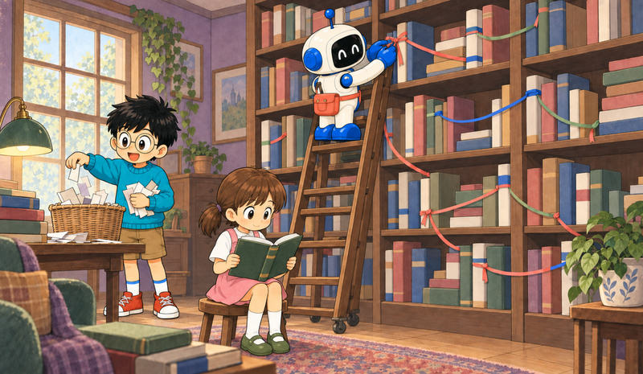

Feature 09 · VERBATIM · 2026 04
llm-wiki
A pattern for building personal knowledge bases using LLMs.

This is an idea file, it is designed to be copy pasted to your own LLM Agent (e.g. OpenAI Codex, Claude Code, OpenCode / Pi, or etc.). Its goal is to communicate the high level idea, but your agent will build out the specifics in collaboration with you.
The core idea
Most people’s experience with LLMs and documents looks like RAG: you upload a collection of files, the LLM retrieves relevant chunks at query time, and generates an answer. This works, but the LLM is rediscovering knowledge from scratch on every question. There’s no accumulation. Ask a subtle question that requires synthesizing five documents, and the LLM has to find and piece together the relevant fragments every time. Nothing is built up. NotebookLM, ChatGPT file uploads, and most RAG systems work this way.
The idea here is different. Instead of just retrieving from raw documents at query time, the LLM incrementally builds and maintains a persistent wiki — a structured, interlinked collection of markdown files that sits between you and the raw sources. When you add a new source, the LLM doesn’t just index it for later retrieval. It reads it, extracts the key information, and integrates it into the existing wiki — updating entity pages, revising topic summaries, noting where new data contradicts old claims, strengthening or challenging the evolving synthesis. The knowledge is compiled once and then kept current, not re-derived on every query.
This is the key difference: the wiki is a persistent, compounding artifact. The cross-references are already there. The contradictions have already been flagged. The synthesis already reflects everything you’ve read. The wiki keeps getting richer with every source you add and every question you ask.
You never (or rarely) write the wiki yourself — the LLM writes and maintains all of it. You’re in charge of sourcing, exploration, and asking the right questions. The LLM does all the grunt work — the summarizing, cross-referencing, filing, and bookkeeping that makes a knowledge base actually useful over time. In practice, I have the LLM agent open on one side and Obsidian open on the other. The LLM makes edits based on our conversation, and I browse the results in real time — following links, checking the graph view, reading the updated pages. Obsidian is the IDE; the LLM is the programmer; the wiki is the codebase.
This can apply to a lot of different contexts. A few examples:
Personal: tracking your own goals, health, psychology, self-improvement — filing journal entries, articles, podcast notes, and building up a structured picture of yourself over time.
Research: going deep on a topic over weeks or months — reading papers, articles, reports, and incrementally building a comprehensive wiki with an evolving thesis.
Reading a book: filing each chapter as you go, building out pages for characters, themes, plot threads, and how they connect. By the end you have a rich companion wiki. Think of fan wikis like Tolkien Gateway: thousands of interlinked pages covering characters, places, events, languages, built by a community of volunteers over years. You could build something like that personally as you read, with the LLM doing all the cross-referencing and maintenance.
Business/team: an internal wiki maintained by LLMs, fed by Slack threads, meeting transcripts, project documents, customer calls. Possibly with humans in the loop reviewing updates. The wiki stays current because the LLM does the maintenance that no one on the team wants to do.
Competitive analysis, due diligence, trip planning, course notes, hobby deep-dives — anything where you’re accumulating knowledge over time and want it organized rather than scattered.
Architecture
There are three layers:
Raw sources — your curated collection of source documents. Articles, papers, images, data files. These are immutable — the LLM reads from them but never modifies them. This is your source of truth.
The wiki — a directory of LLM-generated markdown files. Summaries, entity pages, concept pages, comparisons, an overview, a synthesis. The LLM owns this layer entirely. It creates pages, updates them when new sources arrive, maintains cross-references, and keeps everything consistent. You read it; the LLM writes it.
The schema — a document (e.g. CLAUDE.md for Claude Code or AGENTS.md for Codex) that tells the LLM how the wiki is structured, what the conventions are, and what workflows to follow when ingesting sources, answering questions, or maintaining the wiki. This is the key configuration file — it’s what makes the LLM a disciplined wiki maintainer rather than a generic chatbot. You and the LLM co-evolve this over time as you figure out what works for your domain.
Operations
Ingest. You drop a new source into the raw collection and tell the LLM to process it. An example flow: the LLM reads the source, discusses key takeaways with you, writes a summary page in the wiki, updates the index, updates relevant entity and concept pages across the wiki, and appends an entry to the log. A single source might touch 10-15 wiki pages. Personally I prefer to ingest sources one at a time and stay involved — I read the summaries, check the updates, and guide the LLM on what to emphasize. But you could also batch-ingest many sources at once with less supervision. It’s up to you to develop the workflow that fits your style and document it in the schema for future sessions.
Query. You ask questions against the wiki. The LLM searches for relevant pages, reads them, and synthesizes an answer with citations. Answers can take different forms depending on the question — a markdown page, a comparison table, a slide deck (Marp), a chart (matplotlib), a canvas. The important insight: good answers can be filed back into the wiki as new pages. A comparison you asked for, an analysis, a connection you discovered — these are valuable and shouldn’t disappear into chat history. This way your explorations compound in the knowledge base just like ingested sources do.
Lint. Periodically, ask the LLM to health-check the wiki. Look for: contradictions between pages, stale claims that newer sources have superseded, orphan pages with no inbound links, important concepts mentioned but lacking their own page, missing cross-references, data gaps that could be filled with a web search. The LLM is good at suggesting new questions to investigate and new sources to look for. This keeps the wiki healthy as it grows.
Indexing and logging
Two special files help the LLM (and you) navigate the wiki as it grows. They serve different purposes:
index.md is content-oriented. It’s a catalog of everything in the wiki — each page listed with a link, a one-line summary, and optionally metadata like date or source count. Organized by category (entities, concepts, sources, etc.). The LLM updates it on every ingest. When answering a query, the LLM reads the index first to find relevant pages, then drills into them. This works surprisingly well at moderate scale (~100 sources, ~hundreds of pages) and avoids the need for embedding-based RAG infrastructure.
log.md is chronological. It’s an append-only record of what happened and when — ingests, queries, lint passes. A useful tip: if each entry starts with a consistent prefix (e.g. ## [2026-04-02] ingest | Article Title), the log becomes parseable with simple unix tools — grep "^## \[" log.md | tail -5 gives you the last 5 entries. The log gives you a timeline of the wiki’s evolution and helps the LLM understand what’s been done recently.
Optional: CLI tools
At some point you may want to build small tools that help the LLM operate on the wiki more efficiently. A search engine over the wiki pages is the most obvious one — at small scale the index file is enough, but as the wiki grows you want proper search. qmd is a good option: it’s a local search engine for markdown files with hybrid BM25/vector search and LLM re-ranking, all on-device. It has both a CLI (so the LLM can shell out to it) and an MCP server (so the LLM can use it as a native tool). You could also build something simpler yourself — the LLM can help you vibe-code a naive search script as the need arises.
Tips and tricks
Obsidian Web Clipper is a browser extension that converts web articles to markdown. Very useful for quickly getting sources into your raw collection.
Download images locally. In Obsidian Settings → Files and links, set “Attachment folder path” to a fixed directory (e.g.
raw/assets/). Then in Settings → Hotkeys, search for “Download” to find “Download attachments for current file” and bind it to a hotkey (e.g. Ctrl+Shift+D). After clipping an article, hit the hotkey and all images get downloaded to local disk. This is optional but useful — it lets the LLM view and reference images directly instead of relying on URLs that may break. Note that LLMs can’t natively read markdown with inline images in one pass — the workaround is to have the LLM read the text first, then view some or all of the referenced images separately to gain additional context. It’s a bit clunky but works well enough.Obsidian’s graph view is the best way to see the shape of your wiki — what’s connected to what, which pages are hubs, which are orphans.
Marp is a markdown-based slide deck format. Obsidian has a plugin for it. Useful for generating presentations directly from wiki content.
Dataview is an Obsidian plugin that runs queries over page frontmatter. If your LLM adds YAML frontmatter to wiki pages (tags, dates, source counts), Dataview can generate dynamic tables and lists.
The wiki is just a git repo of markdown files. You get version history, branching, and collaboration for free.
Why this works
The tedious part of maintaining a knowledge base is not the reading or the thinking — it’s the bookkeeping. Updating cross-references, keeping summaries current, noting when new data contradicts old claims, maintaining consistency across dozens of pages. Humans abandon wikis because the maintenance burden grows faster than the value. LLMs don’t get bored, don’t forget to update a cross-reference, and can touch 15 files in one pass. The wiki stays maintained because the cost of maintenance is near zero.
The human’s job is to curate sources, direct the analysis, ask good questions, and think about what it all means. The LLM’s job is everything else.
The idea is related in spirit to Vannevar Bush’s Memex (1945) — a personal, curated knowledge store with associative trails between documents. Bush’s vision was closer to this than to what the web became: private, actively curated, with the connections between documents as valuable as the documents themselves. The part he couldn’t solve was who does the maintenance. The LLM handles that.
Note
This document is intentionally abstract. It describes the idea, not a specific implementation. The exact directory structure, the schema conventions, the page formats, the tooling — all of that will depend on your domain, your preferences, and your LLM of choice. Everything mentioned above is optional and modular — pick what’s useful, ignore what isn’t. For example: your sources might be text-only, so you don’t need image handling at all. Your wiki might be small enough that the index file is all you need, no search engine required. You might not care about slide decks and just want markdown pages. You might want a completely different set of output formats. The right way to use this is to share it with your LLM agent and work together to instantiate a version that fits your needs. The document’s only job is to communicate the pattern. Your LLM can figure out the rest.